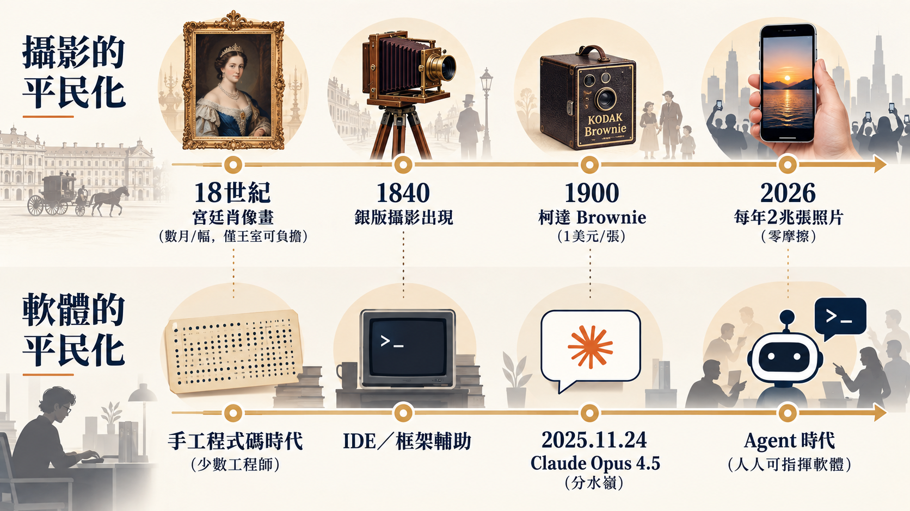
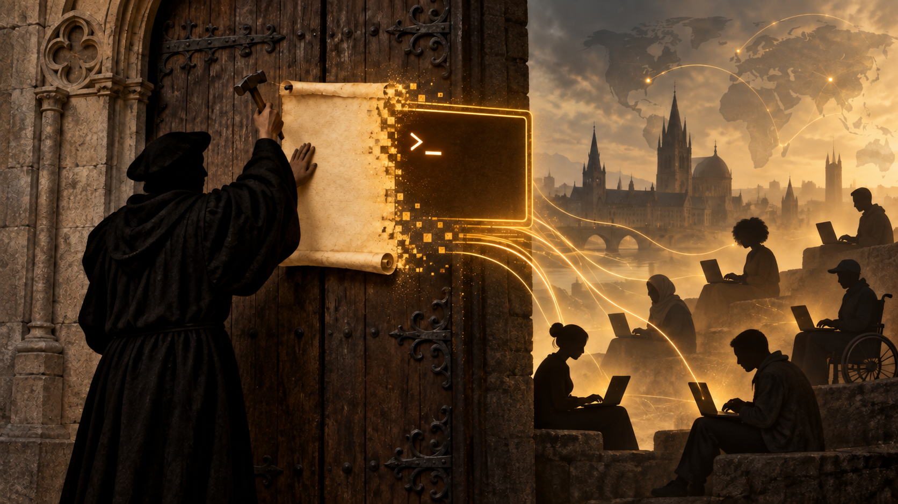

David Heinemeier Hansson 站上 Rails World 2026 的舞台時，先放了一句自嘲：有人看到一個人為了電腦這麼興奮地跳來跳去，第一反應大概會想幫他掛號。他說沒關係，他不叫這個 AI psychosis，他叫它 AI delirium。這不是開場的玩笑話而已——接下來一小時，他要講的是為什麼他一個寫了 25 年 Ruby、創造了 Rails 這個框架的人，現在幾乎已經不寫程式碼了，而且他覺得這是他這輩子最幸運的時刻。
一台相機改變的不只是攝影
DHH 選擇的切入點，是一張 18 世紀的肖像畫。想要留下自己的畫像，你得請約書亞·雷諾茲（Joshua Reynolds）這種宮廷畫師上門，坐上好幾個鐘頭，然後等他花上好幾個月完成。雷諾茲畫過的《華德格雷夫夫人像》，甚至因為畫中人露出一截腳踝而被客戶退件，他只能乖乖重畫——DHH 開玩笑說，如果你跟客戶合作過，大概能體會雷諾茲當時的心情。這種等級的委託，只有王室或上層資產階級才付得起。
技術進步得極慢。1801 年到下一幅他展示的畫作之間，足足過了八十年。1888 年，丹麥皇室請畫家勞里茨·圖森（Laurits Tuxen）作畫，他不是花三個月，是花了整整三年。這幅畫至今仍掛在哥本哈根的皇家廣場——而畫中央那位穿粉紅裙子的女士，是 DHH 的曾祖母；圖森，是他的曾曾祖父。他後來也秀出一張 1921 年、圖森自己站在鏡頭前的照片：這位靠手繪肖像吃飯一輩子的畫家，在人生最後幾年，坦然接受讓一種摧毀了他原本職業的新技術，幫自己留下最後一張影像。
這才是這個類比真正的重點。1840 年前後，相機出現；1900 年，柯達推出 Brownie，大約一美元就能拍一張照片，攝影第一次真正走進尋常家庭。可是「走進尋常家庭」不代表「隨手可得」——DHH 秀出自己童年僅存的三張照片，說這大概就是他整個童年影像存量的一成。即使到了他出生的 1979 年，技術門檻已經降了很多，拍照依然是一件要斟酌著做的事。技術從貴族專屬到平民可用，中間還隔著一段「平民可用但仍需珍惜」的漫長中間態，前前後後花了將近一百年才走完。
然後是手機相機出現後的斷崖式加速。攝影從「可能人人都有」變成「完全零摩擦」，拍照數量直接呈拋物線暴增。到了 2026 年的今天，全球一年拍下的照片大約有兩兆張——多到便宜到沒人會去計算成本。DHH 把這條曲線直接搬過來套在軟體上：如果攝影用了將近兩百年走完「貴族專屬→中產可用→零摩擦氾濫」的三個階段，軟體現在正站在自己的柯達 Brownie 時刻——而那個時刻，他標得非常精確：2025 年 11 月 24 日，Anthropic 發布 Claude Opus 4.5 的那一天（這個日期經 Anthropic 官方公告核實無誤，不是他隨口一說）。「在那之前有整個世界，那之後有另一個世界」，他說，歷史書會把這天標成 agent 時代的拐點。

過去 21 年我寫的程式碼，不到最近 20 個月的一半
DHH 沒有停在比喻上，他直接把自己的產出數字端出來。過去 20 個月，他親手寫的程式碼，比他前面 21 年職業生涯寫的加起來還少一半。這句話乍聽像誇張修辭，但他接著補了一個更具體的對照：那 21 年裡，他平均每年寫大約三萬行 Ruby 生產程式碼——這個量，已經足夠撐起 37signals 的多項產品和整個 Rails 框架。而今年八月，他一個月就寫了十五萬行程式碼，是他長期平均值的六十倍。他自己也承認這裡有水分：agent 產出的 Rust 程式碼比 Ruby 冗長，一部分是語言本身的問題，不是純粹的效率提升。但即便打了折扣，量級的落差依然驚人到無法忽視。
真正讓這件事變得不只是效率議題的，是 37signals 幾週前做的一個決定：他們正式宣告「不再手寫程式碼」。DHH 用的詞是 pencils down——不是「盡量少寫」，是把手寫程式碼這件事，從公司的正常作業流程裡拿掉，變成一種例外狀態。他形容得很妙：現在手寫程式碼在 37signals，就像在 Sentry 裡看到一個 bug 報告——代表有什麼地方出錯了，agent 做不出想要的東西，工程師才需要拿起鉛筆。他在現場問了台下：有多少人現在每週還在手寫大量程式碼？舉手的大概只有五個人。他說如果兩三個月前放這張投影片、講同一句話，台下不少人大概會覺得他腦子有問題。現在，這句話只是在描述已經發生的事實。
37signals 不是一路順風走到這個結論的。今年春天做 Basecamp 5 收尾時，他們讓一批設計師直接用 vibe coding 把想要的功能寫進最終版本。個別的 PR 看起來都還算合理，但二三十個疊在一起，整個架構被戳得像瑞士乳酪。團隊當時的反應是：好吧，技術還沒準備好，退回去讓工程師手動審查一切。DHH 承認這是錯誤的結論——不只是因為晚一點技術就追上來了（他半開玩笑說「再給它五分鐘就有 Fable 了」），更因為軟體開發這個階段其實只剩一個真正重要的問題：「你要怎麼從這波智能爆炸裡榨出最大價值」，其他問題全部排在這個問題之後。Basecamp 5 最終還是靠 agent 加速完成，但搭配了大量人工精修——他想不出該怎麼稱呼這種「手工雕琢」的舊工作方式，乾脆現場問觀眾：「Chiseled？這個舊做法該叫什麼名字？」
同一套邏輯，他們直接套用到下一個產品：Hey 的下一代版本。決定很乾脆——不再是網頁應用。過去，小團隊想同時維護六個平台的原生應用是天方夜譚，這也是為什麼會有 React Native、Hotwire Native 這類妥協方案存在，大家都接受用一點體驗上的犧牲換取可維護性。DHH 現場放的，是他們一週前才啟動、六個原生應用同步開發的即時進度——他直白地說，「這太扯了」。這不是他一個人的孤例：Shopify 工程團隊在 2026 年 9 月正式發布技術復盤，把旗艦消費者應用 Shop App 從 React Native 全面改寫成原生的 Swift 與 Kotlin，並公開點名 AI coding agent 是讓這件事變得可行的關鍵——這是官方部落格上可查證的事實，不是 DHH 順口帶過的軼聞。
我恨 Rust，但 Rust 是個很棒的黑盒子
前端解決了，後端呢？這裡 DHH 講了一段全場笑聲最多的自白。他說這對他來說有點困難，理由是：Rust。他說他恨 Rust，說看那段程式碼就像往眼睛裡倒酸——這是他認為過去四十年裡發明出來最醜的程式語言，對著台下投影片大喊「呈堂證供」。但接著他馬上轉折：「如果我永遠不用親眼看它，只需要享受應用程式快個三十到一百倍、編譯成幾毫秒內啟動的迷你執行檔——我愛 Rust。」他把這個矛盾講得很坦白：agent 喜歡 Rust，這是完美的分工——他負責告訴 agent 要做什麼，agent 負責用 Rust 寫，他一輩子都不用看那段程式碼。
這不是空話。他們把 Hey 那個「其實骨子裡就是一台郵件伺服器」的後端，用 Rust 重寫之後，CPU 用量少了 99%，記憶體少了 95%，原本需要多台主機做的事，現在唯一需要多台主機的理由是備援——他們粗略估算，Hey 的尖峰流量大概一台 Raspberry Pi 就能扛住。他把這種「黑盒協作」放進更長的歷史脈絡裡：一個完全不懂 Rust 的人指揮 agent 寫 Rust，把 Rust 當一個黑盒子來評估——這跟人類歷史上任何一個商業主想找一群程式設計師幫他做事，本質上是同一件事，只是握有這個責任的人換了。
這也解釋了他為什麼說，他今年花在 Ruby 上的時間只剩過去平均值的 3% 左右，而他現在最喜歡的程式語言，是英文。「我沒想過會有一個程式語言比 Ruby 更討我喜歡，但真的有——它叫英文。」他強調，他愛 Ruby 勝過世界上任何一個傳統程式語言，但用英文寫程式這件事，帶來的滿足感更勝一籌——即使英文更模糊、更不確定，表達力反而比 Ruby 更強。他甚至說，他大概在四五個月前（可能是三月）已經「從專業程式設計師這個身分退休」了。這句話聽起來很戲劇化，但他馬上補了一個更重要的態度：這不是該懊悔的事，是該懷念、該慶幸自己曾經在場的事——就像有人懷念打孔卡片時代的那種浪漫。「這是計算機歷史上發生過最大的事。」
寫程式的門檻消失，連帶讓過去用來對抗「人類記憶有限、維護成本高昂」而發明的東西——抽象、DRY 原則——也失去原本的正當性。DHH 說，他現在會容許 agent 產出比他自己寫 Ruby 時絕對無法忍受的重複程式碼，因為當有成千上萬個「有意識的程序」同時在修改一個應用程式時，過度抽象製造的收斂點，反而變成阻礙。重複的代價幾乎降到零，保持同步的代價也一樣。他很老實地說：沒有人現在手上有這個新時代的架構藍圖，我們有的只是「哪些舊做法已經明顯不管用」的線索。他半開玩笑地說，能活在這個「連軟體架構這種基本定義都還沒定案」的當下，簡直是走運到不像話——就像你可以親眼目睹物件導向第一次進入程式設計師的意識裡。
一個具體的要求：把 CLI 補齊
整場演講裡，DHH 說了很多「我們還不知道」，只給了一個明確、近乎強制的建議：幫你的應用程式做一個命令列介面（CLI）。他說得很直白：「如果你的應用程式沒有 CLI，我要在下週五前看到它補上，沒有藉口。」理由不是懷舊，是因為 CLI 是 agent 跟系統互動時，延遲最低、資訊密度最高的協定——有了 CLI，agent 幾乎就能把你的整套系統當成隨身工具箱來用，他把這個講法叫做「帶著自己的管家赴宴」，而不是被塞進另一家公司內建的聊天機器人「禮賓服務」。
他舉了一個自己的親身經歷：Hey 用 Elasticsearch 做搜尋，他形容那是「堪用、還算可以，但完全稱不上令人愉快」的搜尋——很多時候找不到你要的東西，尤其是你自己也不確定要找什麼的時候。他要找一封五年前的信，不記得對方公司、甚至不記得年份，只記得內容跟球鞋和某個 podcast 有關。他說，就算是 Google 最強的搜尋引擎，大概也找不到——但透過 agent，他用「概念」而不是「關鍵字」去搜尋，幾分鐘內信就找到了。他老實說自己不完全清楚 agent 是怎麼做到的，「也有點不敢細問」，但他對這個結果感到「無限的欣喜」。
這一段之後，他順勢談到自己過去三個月幾乎只在 X 上聊 Omarchy——他打造的 Linux 系統，概念是把「我們現在能修好任何東西」這件事，直接套用到整台電腦上。他說，如果你喜歡動手做東西、喜歡修東西、對「這裡可以更好」有想法，現在你就真的能把它做出來。去年在同一個舞台，他還很自豪系統安裝只要 3 分 33 秒；上週，AMD 的一位員工在自己「越獄過」的 Halo 筆電上，35 秒就裝好了 Omarchy；實驗室裡，最快紀錄是 9 秒——他調侃說「有些電腦開機都要不了 9 秒」。他引用 HashiCorp 與 Ghostty 創辦人 Mitchell Hashimoto 的一句話回應「為什麼 3 分鐘還不夠快」的質疑：追求卓越不需要理由。而 Omarchy 背後那個非營利的 Omacom Foundation，他說已經為這個計畫募到大約兩千萬美元——查證時（2026 年 9 月）Omarchy 官網公布的認捐與贊助承諾總額是 2,170 萬美元，跟他說的數字同一個量級，沒有誇大；但這個總額裡包含分好幾年支付的企業承諾（例如 Alibaba Cloud 三年共 300 萬美元）與價值約 180 萬美元的 AI token 額度贊助，不是兩千萬美元現金已經一次到帳。
他也順手展示了這種「因為我想要」邏輯延伸出的一串個人專案：一個跟 Omarchy 主題配色的計算機——他一張截圖給 agent 看，問「能不能做成這樣」，agent 就做出來了，還推上了公開的 repo；一個他取代了他用多年的 Mac 寫作軟體的自製版本；一個簡易的影片剪輯工具；還有他這次上台用的簡報軟體 Hype，建立在 Markdown 上、支援完整視覺化，執行檔只有半個 MB——他說得意到近乎誇張：「半個他媽的 MB，加點壓縮幾乎能塞進一張磁片。」他把這個現象講得很直接：過去二十年，運算力的進步幾乎全拿去換人類的生產力，這是對的選擇，但代價是應用程式普遍又肥又慢又懶——因為一個程式設計師的工時很貴，花在優化上不值得，連 Spotify 的音樂播放器都能肥到 1.2GB。現在，每一項優化都變得唾手可得，一個模型可以連夜跑，交出十倍甚至三十倍的改善。
沒有人知道未來，所以理性的選擇是保持樂觀
演講的最後一段，DHH 把話題轉向大家真正擔心的事：安全。他沒有迴避，直接說「這是真的問題，值得討論」。但他隨即把鏡頭拉遠，講起 1950 年代美國自動櫃員機出現時的恐慌——當時外界普遍預期，銀行不再需要行員，大量行員將在十八個月內失業。他說的結果是：銀行分行的運營成本降低後，銀行開了更多分行，雇用了更多行員，他們的工作內容則轉向更複雜的理財諮詢（他調侃說，包括向你推銷次貸）。
這個「自動化沒有讓需求萎縮，反而擴大市場」的故事方向是對的，是經濟學裡談自動化悖論時常被引用的經典案例。但要老實說一句：DHH 現場講的具體人數——1950 年代三萬名行員、2010 年代四萬名——跟公開統計對不上。美國勞工統計局《Occupational Outlook Quarterly》2012 年春季號記載，2010 年美國銀行櫃員（tellers）就業人數是 56 萬人，比他說的四萬人高了 14 倍；1950 年代的確切數字沒有查到，但整個 1970 到 2010 年代，銀行櫃員人數的常見估計都落在三十萬到五六十萬人這個量級，從來沒有低到四萬。DHH 想傳達的道理——自動化擴大了市場，而不是簡單地零和取代——在經濟學文獻裡站得住，只是他報出來的那組數字，聽起來更像是一個好記的故事版本，不是精確的歷史數字，聽眾如果要引用，最好去查一手統計而不是照搬他的說法。
同樣的邏輯，他也用在更大的問題上。他提到杜魯門總統與奧本海默在白宮橢圓辦公室那場著名的會面——杜魯門那句「我不想再在辦公室見到那個狗娘養的」——藉此說明：連參與發明原子彈的頂尖科學家，都無法預測接下來會發生什麼。冷戰是兩個超級大國之間「最好的一種戰爭」——沒有直接互相投彈——這件事，在原子彈剛發明的那一刻，沒有任何人能準確預言。DHH 的結論是：如果連奧本海默都算不準，某個 AI 悲觀論者要怎麼準確預測接下來二十年？他把這個心態稱為選擇「多一點 P-bloom，少一點 P-doom」——不是無視風險，而是承認沒有人真正知道答案，所以與其提前替一個不確定的結果消耗掉當下的快樂，不如選擇投入。他也提到 Rails 前段時間一個影像處理函式庫的 CVE 資安事件，說這正是「我們有能力、也有義務發明技術去應對我們自己創造出來的問題」的例子。
最後，他把整場演講收在一個宗教改革的比喻上：「Agent Luther 即將終結程式碼的神職階層。」就像馬丁路德把聖經翻譯成通俗語言，讓所有人都能自己讀經，agent 讓所有人都能直接用自然語言跟機器對話，不再需要透過程式設計師這個「祭司階層」轉譯。他知道這句話聽起來像是在說「你們的競爭要來了」，但他反問：誰會怕多一點競爭？你是 Rails 程式設計師，你本來就是箇中翹楚。他用「黑色藥丸是留給魯蛇的，別當魯蛇」結束了整場演講——一個刻意粗俗、故意不留退路的收尾。

這場演講真正在說什麼
把這一小時攤開來看，DHH 沒有真的在講「怎麼用 AI 寫程式」這種戰術問題。他在講的是一個更大的判斷：軟體開發正在經歷跟攝影術一樣的「摩擦力歸零」過程，而這個過程的起點，他非常精確地釘在 2025 年 11 月 24 日——這不是他個人的浪漫化說法，是可以對照官方發布紀錄的一個具體時間點。
對還在用「AI 會不會取代程式設計師」這個框架思考的人，這場演講其實給了一個更難反駁的答案：不是取代不取代的問題，是有沒有守住 CLI 這種能讓 agent 直接介入系統的介面，有沒有放下「程式碼行數就是產出」這種舊有的自我價值評估方式。他自己給出的示範相當極端——一個創造了 Rails、寫了 25 年 Ruby 的人，現在寫的程式碼比過去二十年加起來的一半還少，卻同時說這是他這輩子最有生產力的一年。這個示範是不是每個人都能複製，值得存疑；但他點出的方向——把重複和樣板的容忍度放寬、把架構決策和問題定義當成核心工作、把應用程式的介面往 agent 可以直接使用的方向調整——是可以現在就拿來檢查自己團隊工作方式的具體清單。
他講的歷史類比與外部案例，大部分經得起查證：Opus 4.5 的發布日期、Shopify Shop App 從 React Native 轉向原生的技術復盤，都是可以直接對照官方公告的事實。但也有兩個地方，他為了讓故事更好記，犧牲了一點精確度：1968 年那篇被稱為「10x programmer」起源的 ACM 論文，原始數據其實是除錯時間差 28 倍、編碼時間差 20 倍這種多維度的觀察，「平均 10 倍」是後人簡化後的通俗版本；他引用的 ATM 時代銀行行員人數，也比公開統計小了大約十倍。這些落差不影響他想傳達的核心道理，但如果你想拿這些數字去說服別人，最好先查一次原始來源，而不是直接複誦他在台上說的那組數字。
完整來源清單
- Rails World 2026 Opening Keynote - DHH（YouTube）：https://www.youtube.com/watch?v=vDjW_dRyKXY
- David Heinemeier Hansson 個人網站：https://dhh.dk/
- Anthropic 官方公告《Introducing Claude Opus 4.5》：anthropic.com/news/claude-opus-4-5
- Claude 官方 Release Notes：support.claude.com/.../release-notes
- Shopify Engineering《Migrating Shop app from React Native to native》：shopify.engineering/...
- Sackman, Erikson & Grant (1968), Exploratory Experimental Studies Comparing Online and Offline Programming Performance, Communications of the ACM 11(1)：dl.acm.org/doi/10.1145/362851.362858
- James Bessen, Learning by Doing: The Real Connection between Innovation, Wages, and Wealth, Yale University Press, 2015
- 美國勞工統計局（BLS）職業就業統計：bls.gov/oes/
- BLS, Occupational Outlook Quarterly, 2012 年春季號（2010 年銀行櫃員就業人數 56 萬人）：files.eric.ed.gov/fulltext/EJ974220.pdf
- Omarchy 官方網站（Omacom Foundation 贊助資訊）：omarchy.org
- Omarchy 募資進度頁（2026 年 9 月：認捐總額 2,170 萬美元）：omarchy.org/#momentum-by-the-numbers